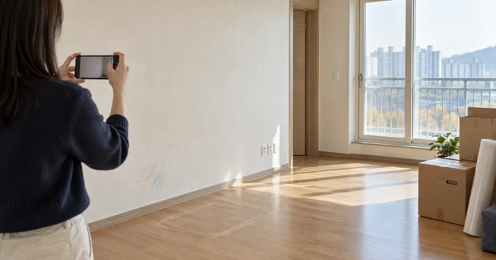
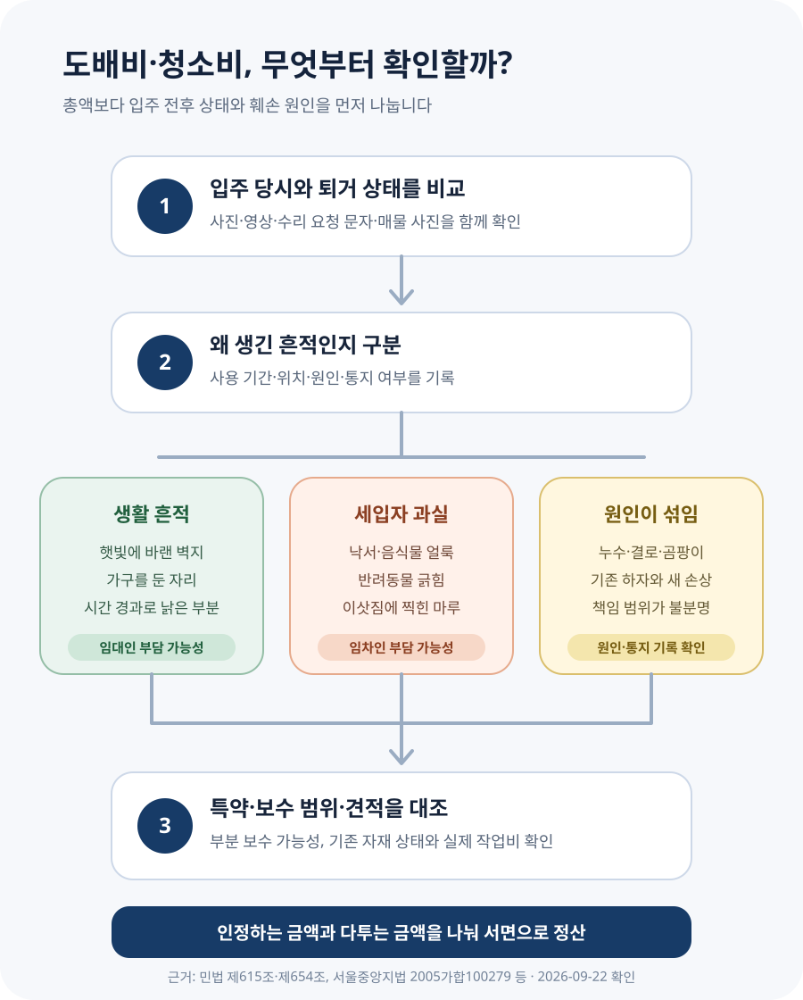

전세·월세 이사할 때 도배비와 청소비를 세입자가 내야 할까?

몇 년 살며 벽지가 누렇게 변하거나 가구 자국이 남은 정도라면 세입자가 집 전체 도배비를 무조건 부담하는 것은 아닙니다. 반면 아이의 낙서, 반려동물이 뜯은 벽지, 이삿짐에 찍힌 마루처럼 세입자의 고의·과실로 생긴 훼손은 원상회복 비용이 문제 될 수 있습니다. 청소비도 법에 정해진 일률적인 금액은 없습니다. 계약서 특약, 입주 전후 사진, 실제 훼손 범위와 견적을 차례로 확인해야 합니다.
원상회복은 ‘입주 첫날의 새집’으로 되돌리는 말이 아닙니다
이삿날을 앞두고 집주인이 “도배를 다시 하고 입주청소까지 해 달라”고 요구하면 어디까지 해야 하는지 막막합니다. 계약서에는 대개 ‘임차인은 계약 종료 시 원상회복하여 반환한다’는 문장이 들어 있기 때문입니다. 하지만 원상회복이라는 말만으로 세입자가 집 전체를 새것으로 바꿔야 하는 것은 아닙니다.
민법 제615조는 빌린 물건을 반환할 때 원상에 회복하도록 정하고, 제654조가 이 규정을 임대차에도 준용합니다. 여기까지만 읽으면 모든 변화가 세입자 책임처럼 보일 수 있습니다. 그래서 실제 분쟁에서는 변화가 생긴 원인과 계약 내용을 함께 봅니다.
서울중앙지방법원 2005가합100279·2006가합62053 판결은 통상적인 방법으로 사용해 생긴 상태라면 입주 당시보다 나빠졌더라도 그대로 반환할 수 있다고 설명했습니다. 임대차는 공간을 사용하고 그 대가로 차임을 내는 계약이므로, 정상적인 사용으로 생기는 가치 감소는 계약에서 예정된 일이라는 취지입니다. 다만 이 판결의 사실관계는 주택이 아닌 건물 임대차입니다. 주택에서 실제로 얼마를 부담할지는 계약과 훼손 사정을 따로 판단해야 합니다.
쉽게 말해 오래 살아 자연스럽게 낡은 부분과 세입자의 부주의로 망가진 부분을 나누는 것이 출발점입니다. ‘벽지가 낡았다’는 결과만으로는 부족하고, 사용 기간·오염 위치·원인·입주 전 상태를 봐야 합니다.
누런 벽지와 가구 자국, 낙서와 찢김은 같은 문제가 아닙니다
| 퇴거 때 보이는 상태 | 먼저 따져 볼 점 | 일반적인 판단 방향 |
|---|---|---|
| 햇빛·시간 경과로 벽지 색이 옅어짐 | 거주 기간, 방 전체의 고른 변색 | 정상 사용에 따른 생활 흔적 가능성 |
| 침대·장롱을 둔 자리의 눌림과 색 차이 | 통상적인 가구 배치로 생겼는지 | 생활 흔적 가능성 |
| 아이의 크레용 낙서, 음식물 얼룩 | 세입자 측 행위, 제거 가능 범위 | 세입자 책임이 인정될 수 있음 |
| 반려동물이 긁어 벽지가 뜯김 | 훼손 면적과 보수 방법 | 세입자 책임이 인정될 수 있음 |
| 누수·결로로 곰팡이가 생김 | 건물 하자, 환기·통지 여부, 발생 경위 | 원인에 따라 달라짐 |
| 못·피스·접착물 흔적 | 개수보다 크기·위치·손상 정도와 특약 | 일률적인 법정 기준 없음 |
인터넷에서 “못 자국 몇 개까지 괜찮다”는 식의 숫자를 보더라도 법에 정해진 전국 공통 기준으로 받아들이면 곤란합니다. 작은 액자를 통상적인 방법으로 걸어 생긴 흔적인지, 타공이 필요한 선반을 여러 개 설치해 벽을 크게 훼손했는지에 따라 사정이 다릅니다.
곰팡이도 마찬가지입니다. 외벽 누수나 단열 문제라면 임대인이 유지·수선해야 할 문제가 될 수 있고, 세입자가 누수 사실을 알면서도 오랫동안 알리지 않아 피해를 키웠다면 책임이 달라질 수 있습니다. 임대차분쟁조정위원회 사례도 임대인의 수선의무와 임차인의 원상회복·수리 필요 통지의무를 함께 살폈습니다.
청소비는 법으로 정해진 정액 요금이 아닙니다
퇴거 청소비를 따로 정한 법정 금액이나 평당 요금은 없습니다. 집을 통상적으로 정리해 반환했는데도 다음 세입자를 위한 전문 입주청소비 전액을 요구한다면, 계약 특약과 실제 상태를 확인해야 합니다. 반대로 쓰레기를 남기거나 기름때·오염을 방치해 별도 청소가 필요한 상태라면 그 비용이 문제 될 수 있습니다.
계약서에 “퇴거 시 청소비 20만원”처럼 금액과 조건이 구체적으로 적혀 있다면 중요한 판단 자료가 됩니다. 다만 특약이 있다는 이유만으로 어떤 상황에서든 자동 공제가 확정된다고 단정할 수는 없습니다. 계약 체결 과정, 문구의 구체성, 실제 청소 상태와 비용이 다툼의 대상이 될 수 있습니다.
가장 현실적인 확인 방법은 집주인에게 “어느 공간이 어떤 상태라서 어떤 작업이 필요한지”를 묻고, 사진과 견적서를 요청하는 것입니다. 집 전체 청소비를 요구하면서 오염 부위나 작업 내역을 보여 주지 않는다면 먼저 산정 근거부터 확인해야 합니다.
‘원상복구한다’는 특약 한 줄만으로 통상적인 낡음까지 넘어오지는 않습니다
앞서 본 서울중앙지방법원 판결은 통상적인 사용으로 생긴 손모까지 세입자에게 부담시키려면, 세입자가 비용을 부담할 범위가 계약서에 구체적으로 적혀 있거나 집주인이 명확하게 설명해 세입자가 그 취지를 알고 합의한 것으로 인정돼야 한다고 보았습니다.
이 판결의 계약서에는 “퇴실 시 도면 상태로 원상회복한다”는 취지의 문구가 있었지만, 법원은 그 문구만으로 통상적인 손모의 보수까지 세입자가 부담하기로 한 구체적인 합의라고 보지 않았습니다. 따라서 다음처럼 문구의 구체성을 확인해야 합니다.
- 막연한 문구 — “퇴거 시 원상복구한다”, “깨끗하게 반환한다”
- 확인할 내용이 드러난 문구 — 반려동물로 훼손된 벽지, 세입자가 설치한 선반 철거, 퇴거 청소비의 금액과 조건
- 함께 볼 자료 — 계약 당시 사진, 중개대상물 확인·설명서, 수리 내역, 문자로 나눈 합의
특약이 구체적일수록 집주인 요구의 근거가 강해질 수 있습니다. 반대로 오래된 집인데 입주 당시 사진도 없고 모든 도배비를 세입자에게 넘기는 짧은 문구만 있다면, 실제 훼손 범위와 합의 내용을 더 살펴야 합니다.
세입자 책임이 있어도 새것으로 교체한 금액 전부가 곧바로 확정되는 것은 아닙니다
세입자가 벽지를 찢었거나 마루를 찍었다고 인정해도 다음 질문이 남습니다. 부분 보수가 가능한지, 집 전체 교체가 필요한지, 이미 사용한 벽지와 마루의 가치 감소를 어떻게 볼지입니다.
임대차분쟁조정위원회의 원상회복 비용 사례는 시간 경과에 따른 가치 감소를 고려하지 않은 채 세입자에게 비용을 부담시키면 임대인에게 통상적인 이익을 넘는 이익을 줄 수 있다고 소개합니다. 다만 주택 벽지·마루에 일률적으로 적용되는 전국 공통 법정 내용연수표가 있는 것은 아닙니다.
따라서 “벽지 한 곳이 훼손됐으니 집 전체 최고급 도배비를 내라”거나 “오래됐으니 아무것도 낼 필요 없다”는 두 결론 모두 성급합니다. 훼손 면적, 기존 자재의 상태와 사용 기간, 부분 보수 가능성, 실제 시공 견적을 놓고 합리적인 범위를 협의해야 합니다.
전체 변색과 아이 낙서가 함께 있다면 따로 나눠 봅니다
4년 동안 살았고 거실 벽지는 햇빛과 시간 경과로 전체적으로 색이 옅어졌지만, 한쪽 아래에는 아이가 그린 크레용 낙서가 있다고 가정해 보겠습니다.
| 확인 항목 | 사례에 적용하면 | 협의할 내용 |
|---|---|---|
| 자연스러운 변색 | 방 전체에 고르게 나타난 시간 경과 흔적 | 집 전체 도배비를 세입자 책임으로 단정하지 않음 |
| 크레용 낙서 | 세입자 가족의 행위로 특정 부위 훼손 | 세척·부분 보수 가능 여부와 해당 범위 비용 확인 |
| 입주 전 상태 | 입주 당시 이미 낡았는지 사진으로 비교 | 기존 상태와 새로 생긴 손상을 구분 |
| 견적 | 부분 보수와 한 면 교체 비용을 각각 확인 | 실제 필요한 작업과 자재 수준을 협의 |
| 특약 | 낙서·반려동물·청소비 관련 구체 문구 확인 | 합의한 범위와 실제 손상을 대조 |
이 사례의 핵심은 도배비를 ‘전액 또는 0원’으로 한 번에 정하지 않는 것입니다. 자연스러운 변색과 낙서라는 서로 다른 원인을 분리하면, 어느 부분을 누가 부담할지 논의하기 쉬워집니다.

집주인이 보증금에서 먼저 빼겠다고 해도 내역 없이 동의할 필요는 없습니다
퇴거 점검 뒤 집주인이 “도배·청소비 100만원을 빼고 보증금을 보내겠다”고 하면, 바로 다투거나 포기하기보다 산정 근거를 서면으로 요청하세요. 어느 부위가 언제 어떻게 훼손됐는지, 어떤 특약을 적용하는지, 실제 견적이나 영수증이 있는지를 확인합니다.
세입자 책임이라고 인정하는 부분이 있다면 그 범위만 구분해 합의할 수 있습니다. 다투는 금액과 인정하는 금액을 섞지 말고, 합의서에는 대상 부위·금액·지급 또는 공제 방법과 “이 금액으로 해당 부분을 정산한다”는 내용을 남기는 편이 좋습니다.
합의가 되지 않으면 한국부동산원과 LH가 운영하는 임대차분쟁조정위원회에 조정을 신청할 수 있습니다. 이곳은 임대차 당사자의 보증금 반환, 원상회복, 수선비 분쟁을 조사하고 조정안을 제시하는 기관입니다. 홈페이지에서 조정신청, 제출서류와 사례를 확인할 수 있습니다.
보증금 반환과 집 인도가 맞물려 있다면 임의로 열쇠를 보관하거나 점유를 계속하기 전에 개별 상황을 상담하세요. 보증금 일부 공제가 부당하다고 느껴져도 이사 일정과 전출, 새집 잔금에 영향을 줄 수 있으므로 문자·사진·견적을 갖춘 뒤 해결 경로를 정하는 것이 안전합니다.
입주 때 사진이 가장 좋고, 지금이라도 퇴거 전 기록을 남기세요
- 계약서를 다시 읽습니다. 원상회복, 도배, 반려동물, 못 자국, 청소비 특약의 문구와 금액을 확인합니다.
- 입주 당시 자료를 찾습니다. 사진·영상, 중개사가 보낸 매물 사진, 수리 요청 문자와 하자 접수 내역을 모읍니다.
- 짐을 뺀 뒤 집 전체를 촬영합니다. 각 방을 넓게 찍고, 벽지·마루·문·욕실 등 다툼이 예상되는 부위는 가까이에서 다시 찍습니다.
- 집주인과 함께 퇴거 점검을 합니다. 문제 부위와 원인에 대한 서로의 의견을 점검표에 적고 사진 번호와 연결합니다.
- 비용 요구는 항목별로 받습니다. ‘원상복구 100만원’이 아니라 부위, 작업, 자재, 수량이 나온 견적을 요청합니다.
- 인정하는 부분과 다투는 부분을 나눕니다. 합의한 금액은 서면으로 남기고, 나머지는 보증금 반환 요구와 함께 별도로 정리합니다.
- 협의가 끝나지 않으면 조정을 검토합니다. 계약서, 입주·퇴거 사진, 문자, 견적과 보증금 지급내역을 준비합니다.
다음 집에서는 입주 당일 동영상 한 번만 찍어도 분쟁이 크게 줄어듭니다. 현관에서 시작해 각 방의 벽·바닥·창호·욕실을 끊지 않고 촬영하고, 이미 있는 얼룩이나 흠집은 가까이 찍어 집주인이나 중개사에게 바로 보내 두세요.
자주 묻는 질문
벽지에 못을 박았으면 무조건 전체 도배비를 내나요?
못 자국의 개수만으로 정해지는 법정 기준은 없습니다. 통상적인 주거 사용인지, 구멍 크기와 손상 정도가 어떤지, 특약이 얼마나 구체적인지, 부분 보수가 가능한지를 함께 봅니다.
집주인이 다음 세입자를 위해 도배했다고 하면 제가 내야 하나요?
새 임차인을 위한 교체라는 이유만으로 현재 세입자 부담이 되는 것은 아닙니다. 내가 만든 실제 훼손을 복구하기 위한 작업인지, 오래된 자재를 새것으로 바꾸는 비용까지 포함됐는지 견적과 사진으로 구분해야 합니다.
계약서에 청소비 20만원이라고 적혀 있으면요?
구체적인 금액과 조건을 합의한 특약은 중요한 자료입니다. 다만 계약 체결 경위와 문구, 실제 반환 상태에 따라 다툼이 생길 수 있으므로 자동으로 무조건 유효·무효라고 단정하지 말고 자료를 갖춰 확인해야 합니다.
입주 전 사진이 하나도 없으면 세입자가 불리한가요?
비교 자료가 부족해질 수는 있지만 곧바로 세입자 책임이 확정되는 것은 아닙니다. 중개 매물 사진, 수리 요청 문자, 관리사무소 기록, 집주인의 과거 도배 시점, 퇴거 당시 영상과 견적 등 다른 자료를 모으세요.
부분 보수가 어렵다고 집 전체 비용을 요구합니다
기술적으로 부분 시공이 불가능한지, 색 차이 때문에 한 면 또는 전체 시공이 필요한지 공사업체 견적과 설명을 요청하세요. 훼손 전 자재의 상태와 사용 기간도 함께 고려해야 합니다.
공식 자료
- 국가법령정보센터 — 민법 제615조(원상회복의무와 철거권)
- 국가법령정보센터 — 민법 제654조(임대차에 제615조 등 준용)
- 서울중앙지방법원 2007. 5. 31. 선고 2005가합100279·2006가합62053 판결
- 임대차분쟁조정위원회 — 원상회복 비용을 이유로 보증금 일부만 반환한 사례
- 임대차분쟁조정위원회 — 보증금반환의무와 원상회복 범위 사례
- 법무부·국토교통부 — 주택임대차보호법 해설집과 표준계약서 안내
정보 기준일: 2026-09-22. 이 글은 주택 임대차의 일반적인 퇴거 정산을 설명합니다. 구체적인 부담액은 계약서와 설명 내용, 입주 전후 상태, 훼손 원인, 증거와 실제 보수 범위에 따라 달라집니다. 보증금이 크거나 집 인도·전출 일정과 함께 다투는 경우에는 조정기관이나 법률전문가에게 개별 검토를 받으세요.
이사 전에 함께 확인하세요
- 전월세 계약 체크리스트원상회복·특약·하자 상태를 계약 전에 기록
- 이사 당일 체크리스트짐을 뺀 뒤 사진을 찍고 보증금·관리비 정산을 확인